40 سؤال
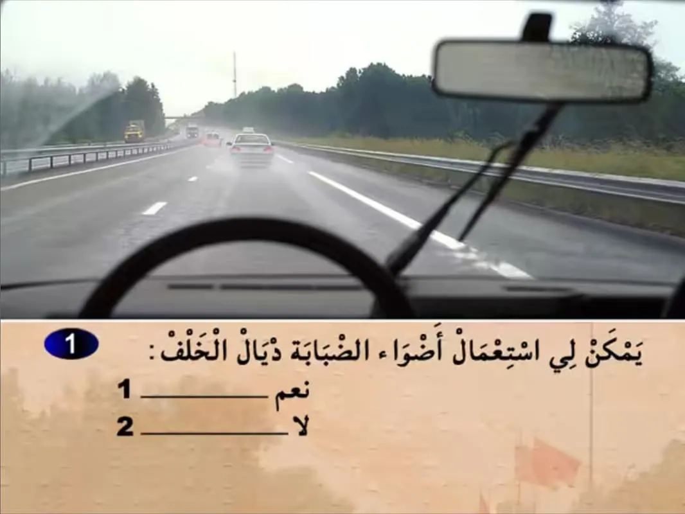
الجواب الصحيح: 2
أثناء هطول الأمطار فنستعمل أضواء التّقابل وأضواء الضباب الأمامية وليس الخلفية، إذن في هذه الحالة لا يمكنني إستعمال أضواء الضباب الخلفية.
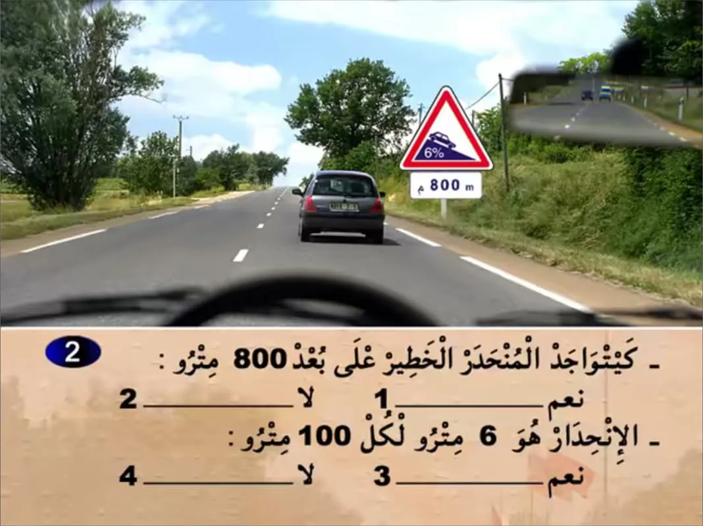
الجواب الصحيح: 1 و 3
العلامة الطّرقية تعني خطر منحدر خطير مع علامة تكميلية تشير إلى أنه يتواجد على بعد 800 متر، وبالنسبة لنسبة الإنحدار فهي تمثل 6% أي 6 أمتار لكل 100 متر.
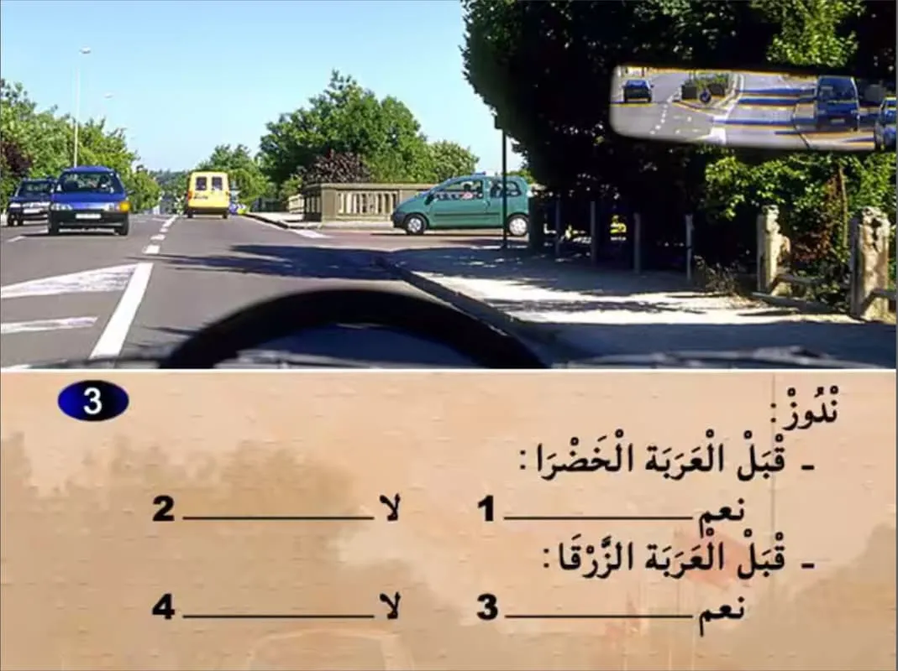
الجواب الصحيح: 1 و 3
نتواجد في ملتقى طرق، الأسبقية للعربات القادمة من الجهة اليمنى، لكن في هذه الحالة العربة الخضراء لديها علامة قف (الخط المرسوم على الأرض) إذن لن أسمح لها بالمرور أولا، وبالنسبة للسيارة الزرقاء فهي توجد على يسارين لا أعطي لها حق الأسبقية أيظا. إذن في هذه الحالة أقوم بالمرور قبل العربة الخضراء وأيظا قبل العربة الزرقاء.
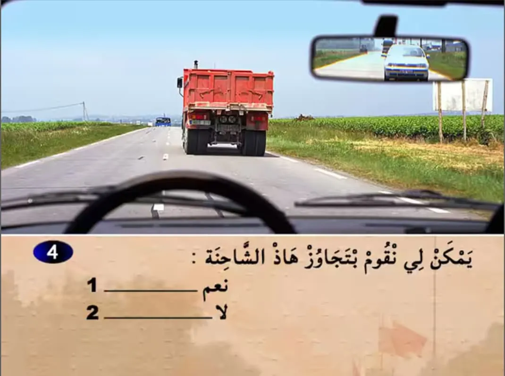
الجواب الصحيح: 2
نتواجد في راس عقبة، الرؤية غير واضحة، أيظا يوجد عربة قادمة في الإتجاه المعاكس، إذن لا يمكنني تجاوز هذه الشاحنة.
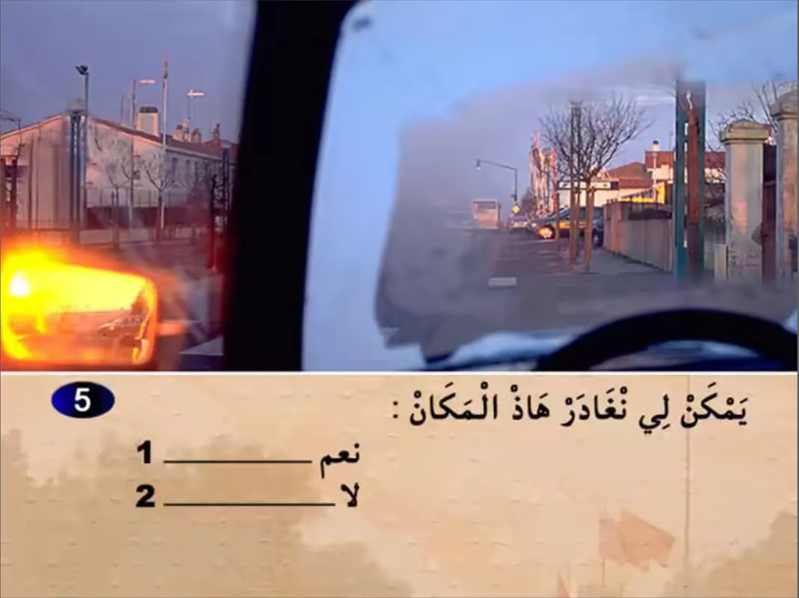
الجواب الصحيح: 2
الرؤية غير واضحة الان، ولا أعرف من يتواجد خلفي وهل توجد سيارة قادمة أم لا لكي أغادر، في هذه الحالة لا يمكنني المغادرة.
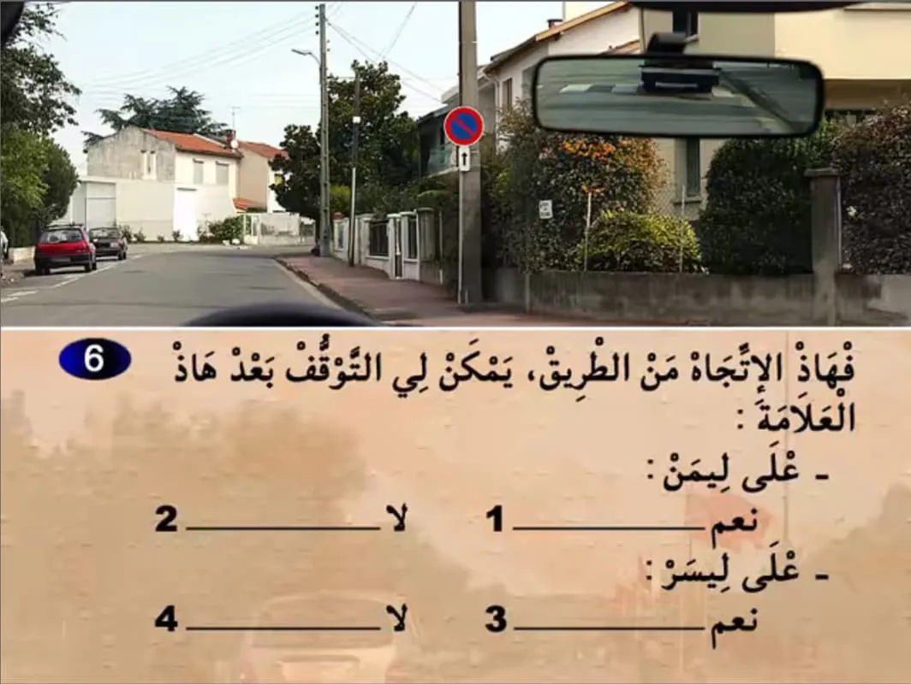
الجواب الصحيح: 2 و 4
العلامة الطرقية تشير إلى المنع، وتشير إلى المنع من التوقّف، ولا يمكنني التّوقف على اليمين لأنه ممنوع كما تشير العلامة الطّرقية وكذلك لا يمكنني التّوقف على اليسار لأنه ممنوع لأن الطريق ذات إتجاهين والتي تعني أن التوقف أصلا ممنوع على الجهة اليسرى.
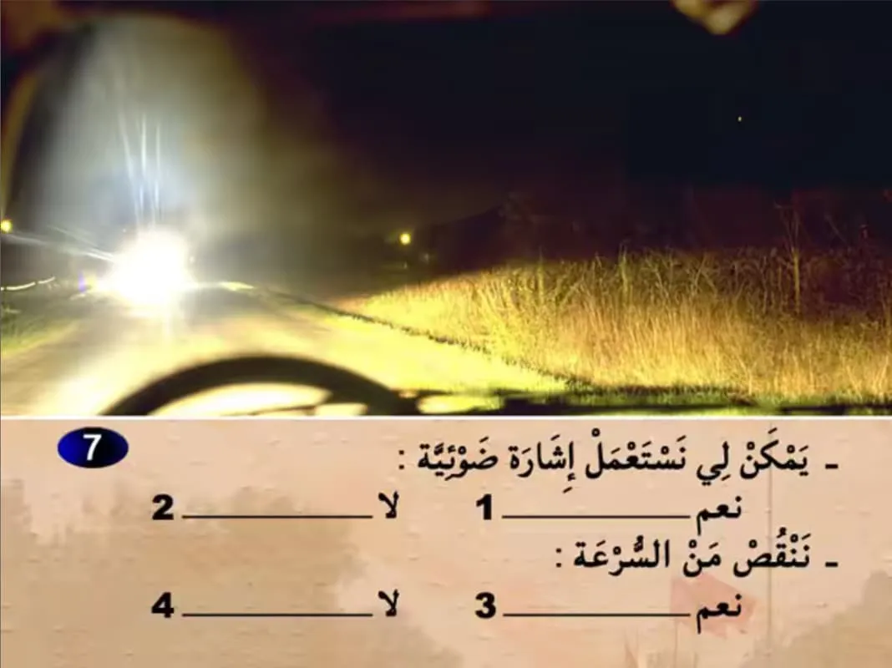
الجواب الصحيح: 1 و 3
يمكننا تنبيه العربة القادمة بالإشارة الضّوية لكي يغيّر الأضواء التي يسير بها، وأيظا من الأفضل في الليل الإنقاص من السرعة في هذه الحالة عند التّقابل مع العربة.
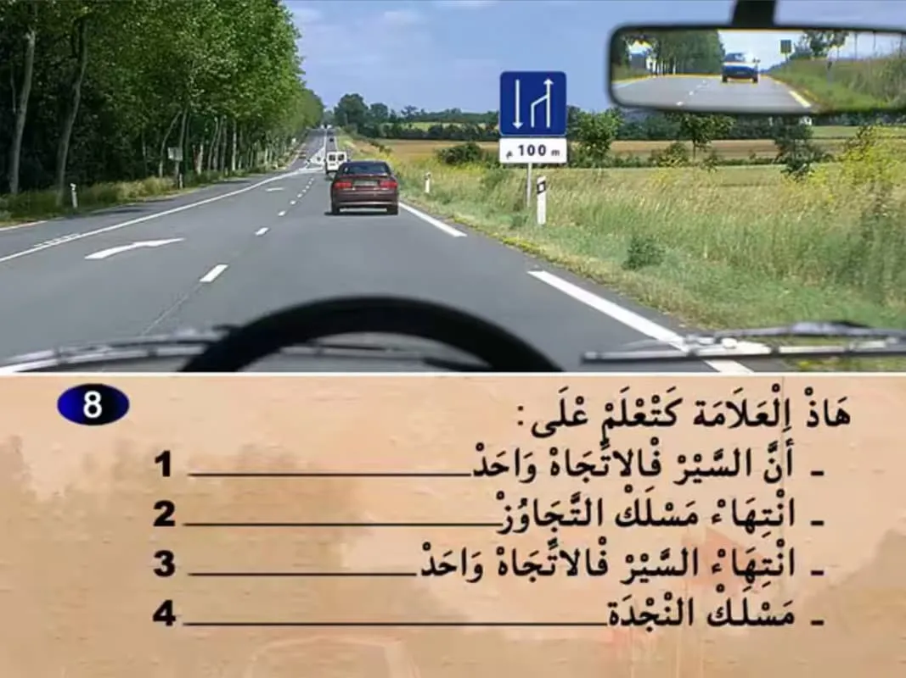
الجواب الصحيح: 2
بالنسبة لهذه الإشارة الطّرقية فهي تعني تقليص عدد مسالك السّير وهي تشير إلى إنتهاء مسلك التجاوز على بعد 100 متر.
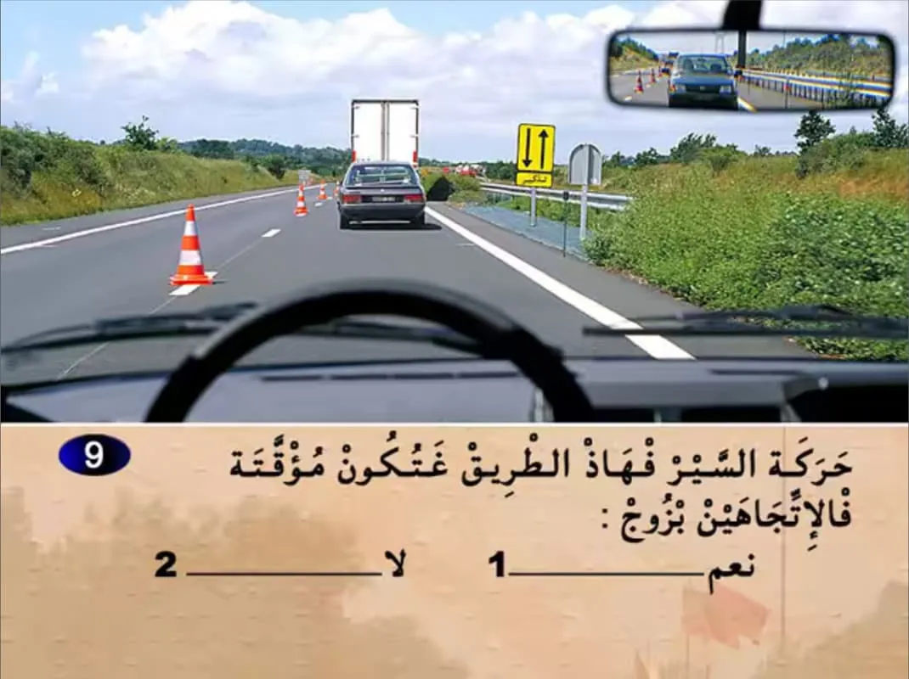
الجواب الصحيح: 1
بالنسبة للعلامة الطرقية العمودية فهي باللون الأصفر وتشير أن حركة السّير في هذه الطريق سوف تكون مؤقتة في الإتجاهين (سهمين).
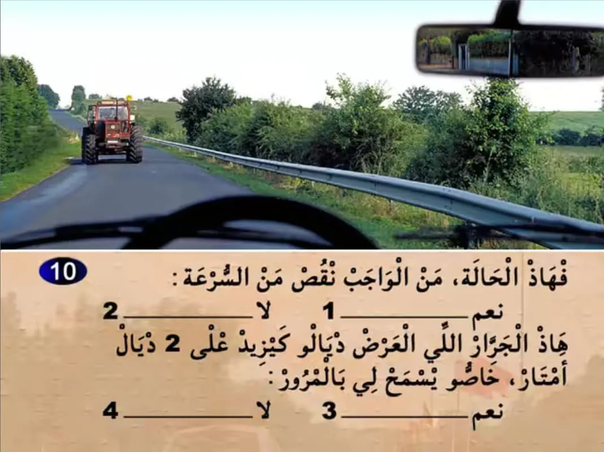
الجواب الصحيح: 1 و 3
في هذه الحالة فمن الواجب عليّ الإنقاص من السرعة لأن الجرّار أصلا يسير ببطئ ولا يمكنني السير بنفس السرعة لذلك يجب عليّ الإنقاص من السرعة. بالنسبة للجراّر فمن الواجب عليه أن يسمح لي بالمرور، أول شيئ لأنه يسير ببطئ ولديه سهولة كبيرة في الوقوف والسماح لي بالمرور، ثاني شيئ لكي لا يعرقل الجرّار حركة السّير ويكون هنالك عربات كثيرة خلفه.
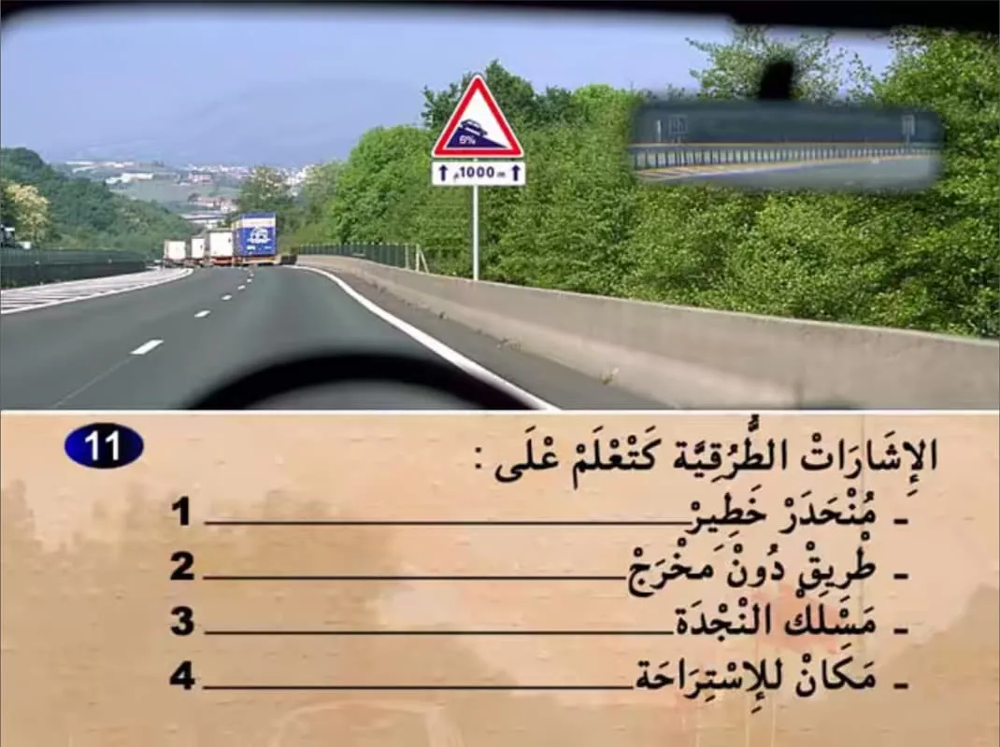
الجواب الصحيح: 1
بالنسبة للإشارة الطّرقية فهي تعني الخطر، وهي تعني أنه يوجد منحدر خطير على مسافة 1000 متر.
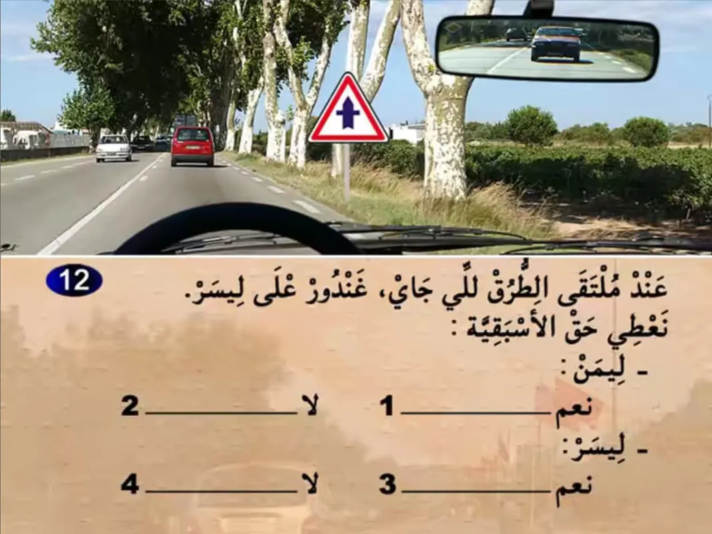
الجواب الصحيح: 2 و 4
الإشارة الطرقية تشير إلى أنه لدي حق الأسبقية في ملتقى الطرق القادم، في هذه الحالة إذا كنت سوف أنعطف إلى اليسار فلا أعطي حق الأسبقية للعربات القادمة من اليمين واليسار لأنني أملك حق الأسبقية.
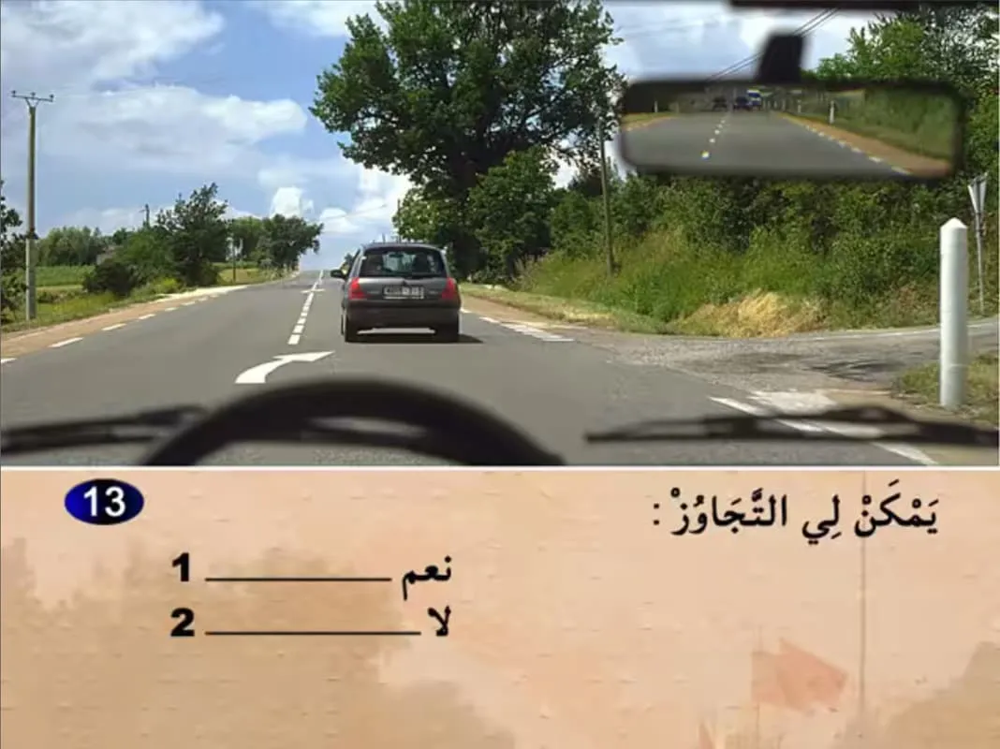
الجواب الصحيح: 2
التشوير الأفقي الأسهم المرسومة على الأرض فهي تجبرني على الإنحياز لليمين، لذلك لا يمكنني التجاوز.
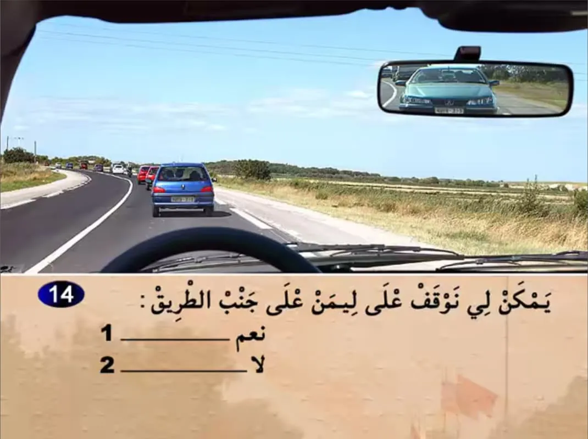
الجواب الصحيح: 1
في هذه الحالة يمكنني الوقوف على اليمين في جنب الطريق، لا توجد علامة طرقية تمنعني من الوقوف، كذلك يوجد مسافة كافية للوقوف على اليمين خارج الطريق، يجب فقط الخروج بشكل كامل عن الطريق والإنحياز قدر المستطاع إلى اليمين لكي أستطيع الوقوف في هذا المكان ولا أعرقل السّير.
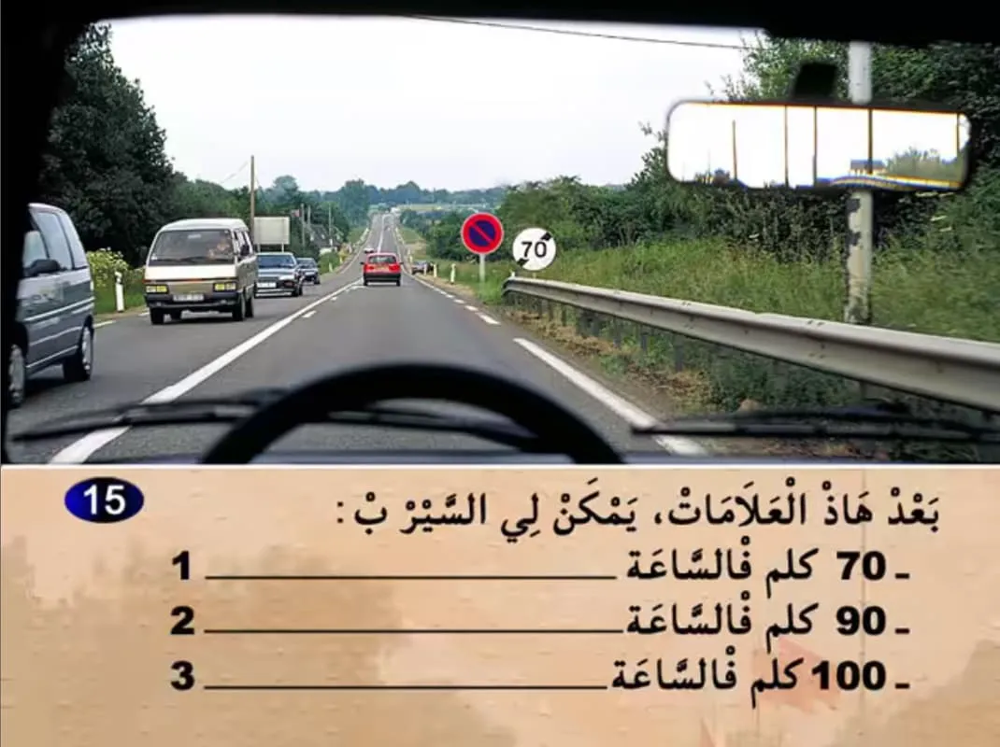
الجواب الصحيح: 1 و 2 و 3
الإشارة الطرقي فهي تعلمني على إنتهاء المنع الذي كان مسبقا، نتواجد الان في طريق وطنية والتي تسمح لنا بالسّير بسرعة أقصاها 100 كلم في الساعة، إذن في هذه الحالة يمكنني السير بسرعة 70 كلم في الساعة أو 90 كلم في الساعة أو كذلك يمكنني السير بسرعة 100 كلم في الساعة.
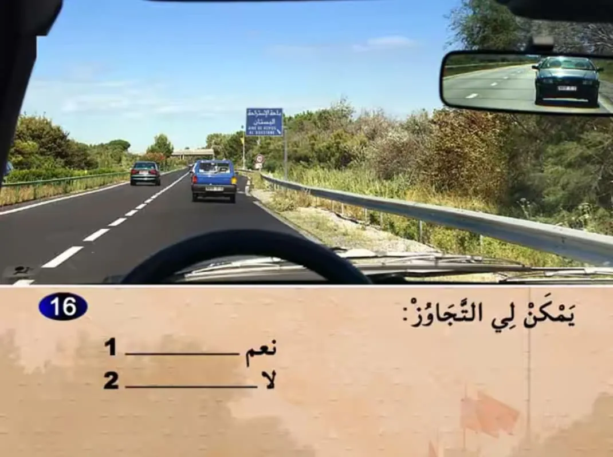
الجواب الصحيح: 1
نتواجد في طريق سيّار كما يوضح التشوير الطّرقي الخط المتّصل الموجود أقصى اليسار، وهذا يعني أن الطريق ذات إتجاه واحد ولا توجد سيارات قادمة في الإتجاه المعاكس، كما أن الخط المتقطّع يسمح لي بالتّجاوز، ولا توجد سيارة من الخلف تستعد لتجاوزي أو تتجاوزني، لذلك يمكنني التّجاوز.
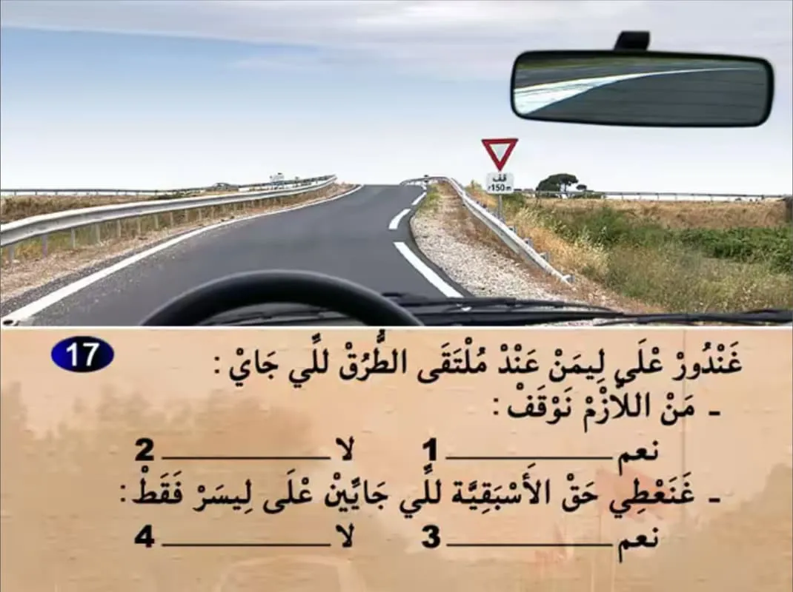
الجواب الصحيح: 1 و 4
العلامة الطّرقية تشير إلى أنه ليس لدينا حق الأسبقية وكذلك علامة تكميلية (قف) تجبرني على الوقوف في ملتقى الطرق القادم، وبالنسبة لإعطاء حق الأسبقية للعربات القادمة من الجهة اليسرى فقط، فيجب علينا إعطاء حق الأسبقية للعربات القادمة من الجهة السمنى وأيظا للعربات القادمة من الجهة اليسرى، وليس العربات القادمة من الجهة اليسرى فقط.
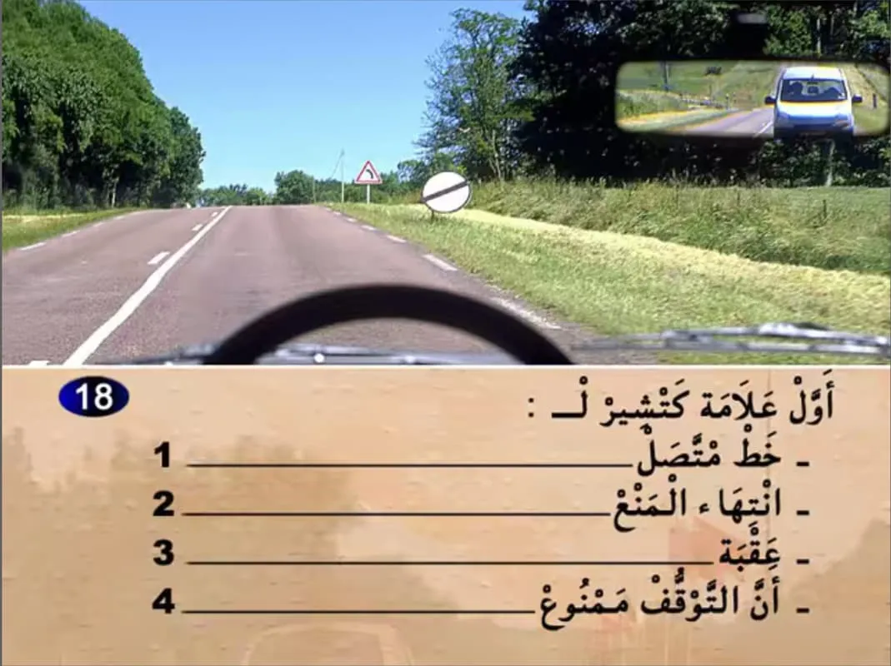
الجواب الصحيح: 2
بالنسبة للإشارة الطّرقية فهي تعني إنتهاء المنع.
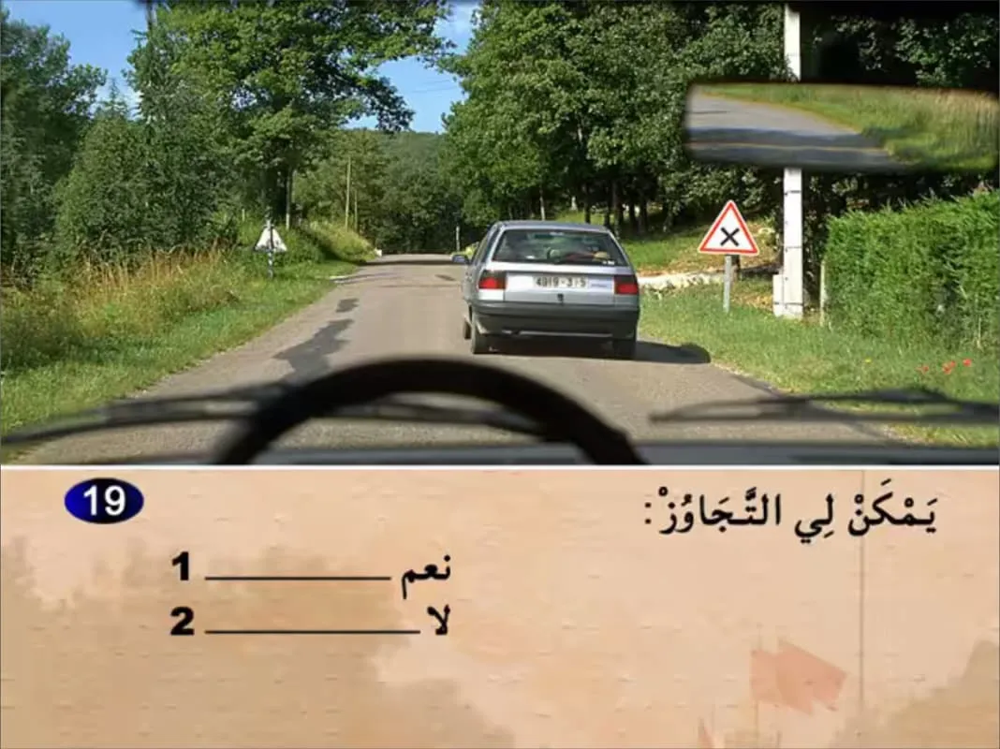
الجواب الصحيح: 2
في هذه الحالة لا يمكنني التجاوز الان الإشارة الطرقية تعني عن وجود ملتقى الطرق وليس لي حق الأسبقية، إذا قمت بالتّجاوز فيمكن أن أتقابل مع سيارة قادمة من الجهة اليمنى أو اليسرى تريد الإنعطاف. لذلك دائما يمنع التجاوز في ملتقى الطّرق.
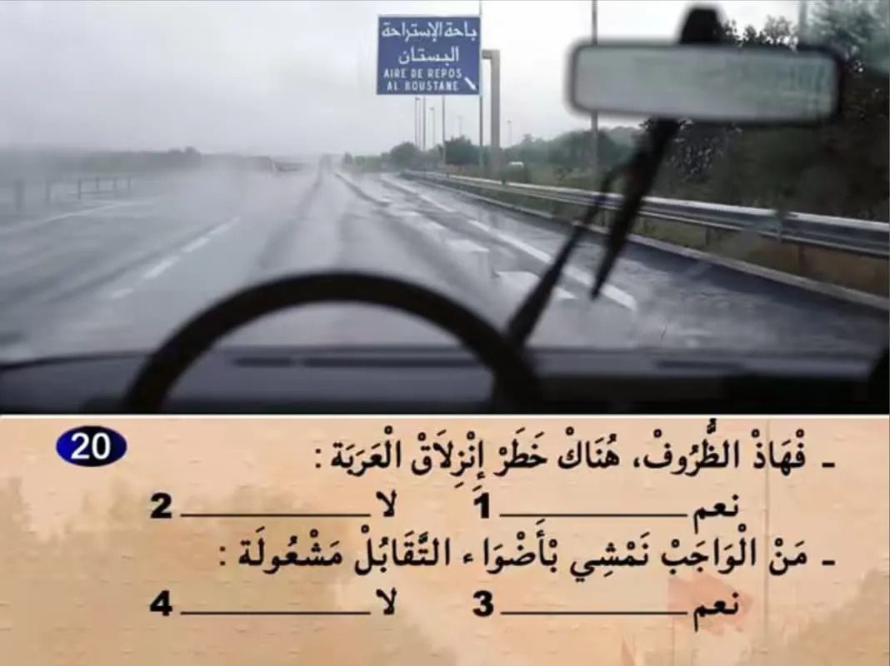
الجواب الصحيح: 1 و 3
في حالة وجود مطر والأرض تكون مبلّلة فيوجد دائما خطر الإنزلاق، كما أن السير في المطر بأضواء التّقابل واجب.
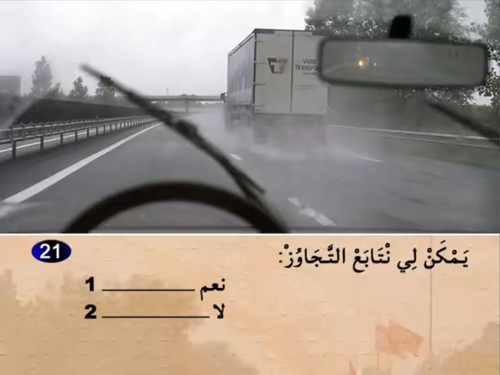
الجواب الصحيح: 1
الإشارة الطرقية الأفقية الخط المتصل المتواجد على اليسار تشير إلى أننا نتواجد في طريق سيار، أي أنه لن يكون هنالك سيارات قادمة في الإتجاه المعاكس، كما أن الخط المتقطع يسمح لي بالتّجاوز، إذن يمكن لي متابعة التّجاوز.
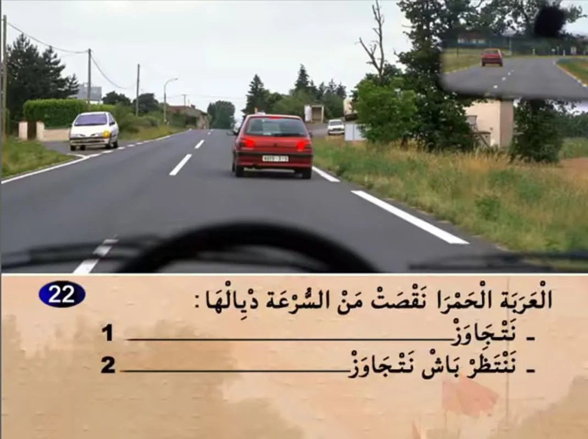
الجواب الصحيح: 2
يجب عليّ الإنتظار لكي أتجاوز لأن السيارة البيضاء تستعد للإندماج في المسلك الخاص بها.
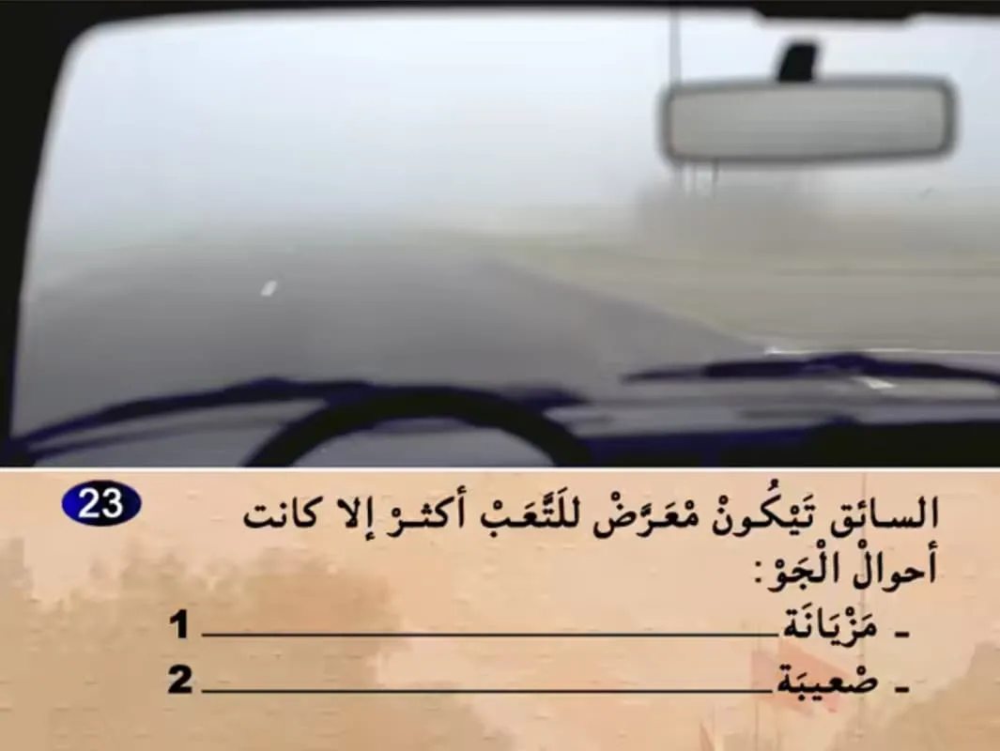
الجواب الصحيح: 2
في الأحوال الجوية العادية والجيّدة فالسائق ليس معرض للتّعب لأن الرؤية تكون واضحة والإشارات المرورية كذلك تكون واضحة، لكن عندما تكون أحوال الجو غير جيدة فسوف يكون معرض للتّعب أكثر لأنه سوف يقوم بمجهود أكبر لكي ينتبه لجميع الإشارات المرورية الموجودة وللعربات القادمة.
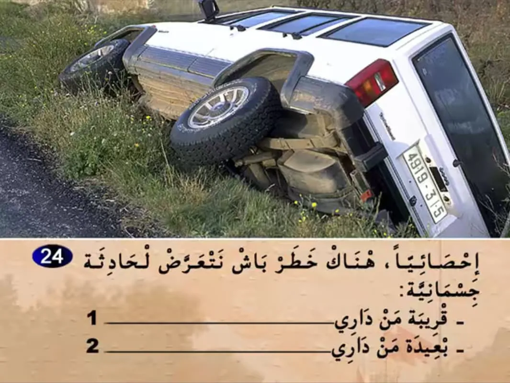
الجواب الصحيح: 1
بالنسبة لعبارة قريبة من منزلي فهي تعني داخل المدينة وبالنسبة لبعيدة عن منزلي فهي تعني خارج المدينة، في هذا الشأن الإحصائيات تقول أنه عندما يكون السائق بعيد عن منزله فلا يكون هنالك خطر كبير للتعرض لحادثة جسمانية مثلما يكون السائق قريب من منزله، لأن السائق عندما يكون داخل المدينة فتوجد سيارات كثيرة وهذا سوف يرفع من نسبة التعرض لحادثة مرورية أي التّعرض لحادثة جسمانية.
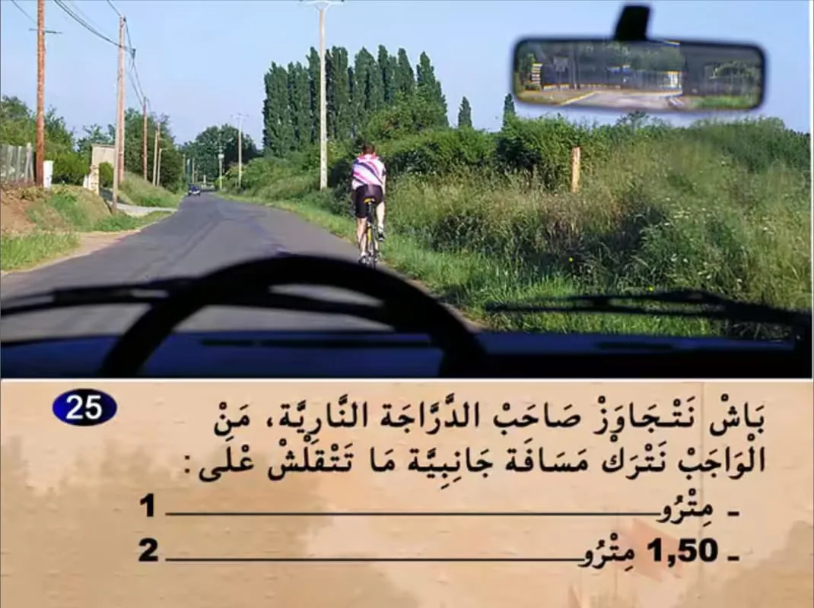
الجواب الصحيح: 1
خارج المدينة ولكي أقوم بتجاوز صاحب الدراجة فيجب عليّ ترك مسافة جانية لا تقّل عن متر ونصف، لكن في هذه الحالة فالطريق ضيقة جدا، لذلك يجب علي ترك مسافة جانبية لا تقّل عن متر واحد.
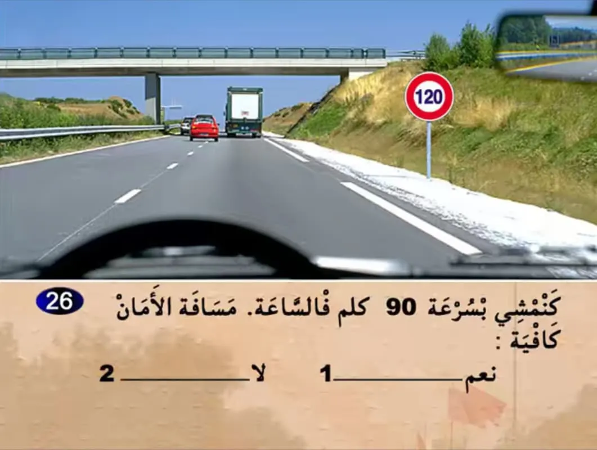
الجواب الصحيح: 2
لحساب مسافة الامان التي نحتاجها فهي العدد العشري الذي نسير به أي 9 ضرب 6 يساوي 54 متر، ولحساب هل مسافة الأمان كافية أم لا فنلتجأ في هذه الحالة للخطوط الموجودة على يمين الطّريق، كل خط يمثّل تقريبا 20 متر، وكل فراغ بين الخطوط فيه تقريبا 5 أمتار، إذن تقريبا يوجد مسافة أمان تقدّر ب 55 إلى 60 متر، إذن مسافة الأمان كافية.
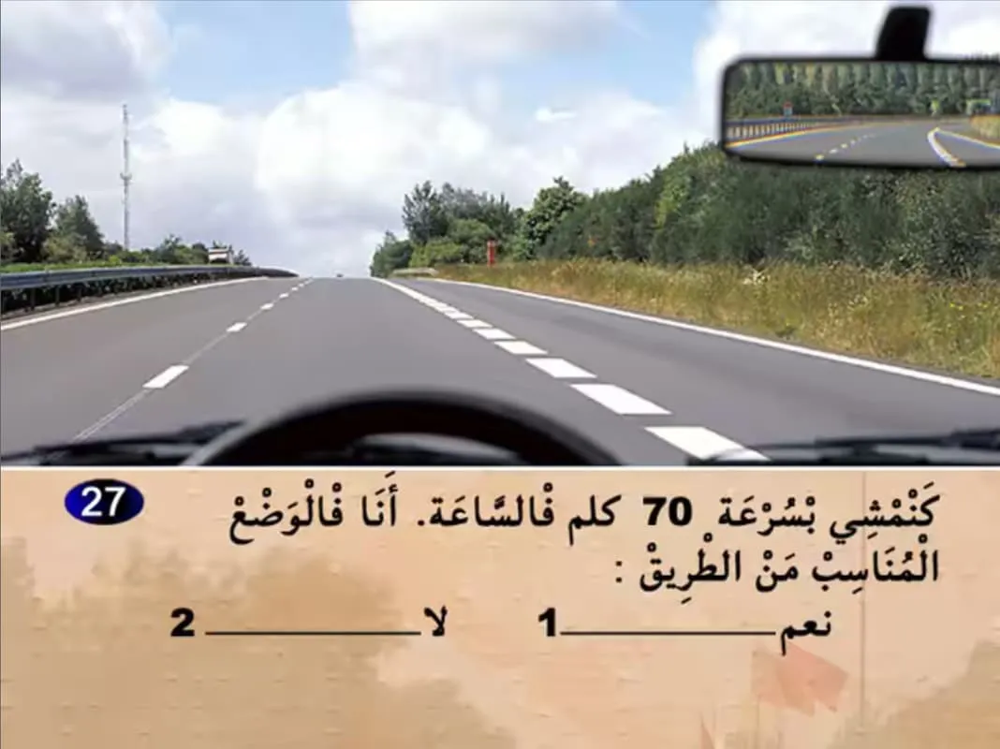
الجواب الصحيح: 1
نحن نتواجد في مكان مناسب من الطريق لأن المسلك المتواجد على اليسار فهو مسلك خاص بالإندماج للسيارات القادمة من الخلف كما توضّح المرآة العاكسة داخل السيارة، إذن أنا الان أتواجد في المسلك الصحيح للسيّر.
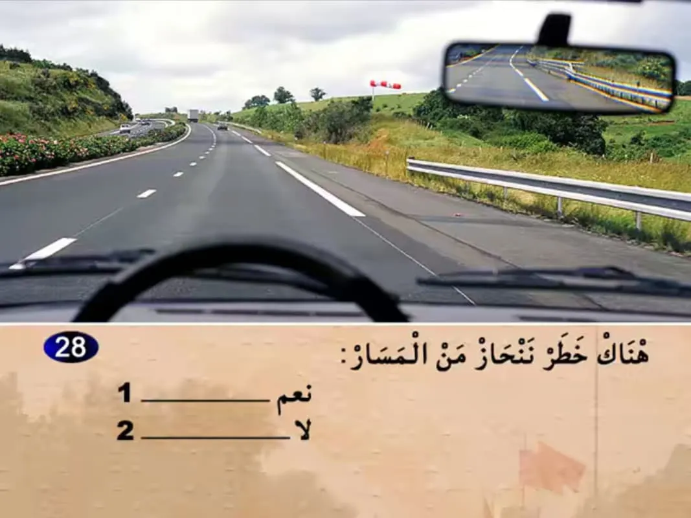
الجواب الصحيح: 1
نعم يوجد خطر الإنحياز من المسار لأنه يوجد منعرج وكذلك وجود رياح كما توضّحه العلامة.
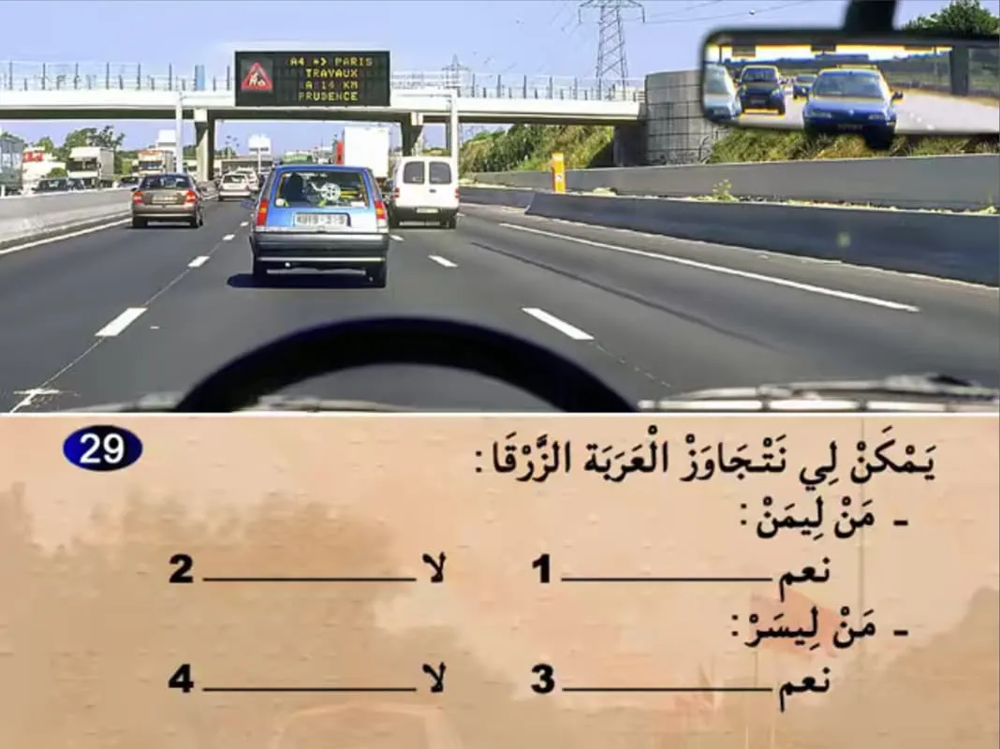
الجواب الصحيح: 2 و 4
أول شيئ لا يمكننا التجاوز من الجهة اليمنى، بالنسبة للتجاوز من الجهة اليسرى فالتشوير الطرقي الأفقي الخط المتقطّع يسمح لي بالتجاوز، لكن عندما يكون هنالك إزدحام مروري فمن الأفضل أن أبقى في المسلك الذي أتواجد فيه، كما أن اللافتة الضوئية تشير إلى أشغال أيظا. لذلك لا يمكنني تجاوز العربة الزرقاء من اليمين وكذلك لا يمكنني تجاوزها من اليسار.
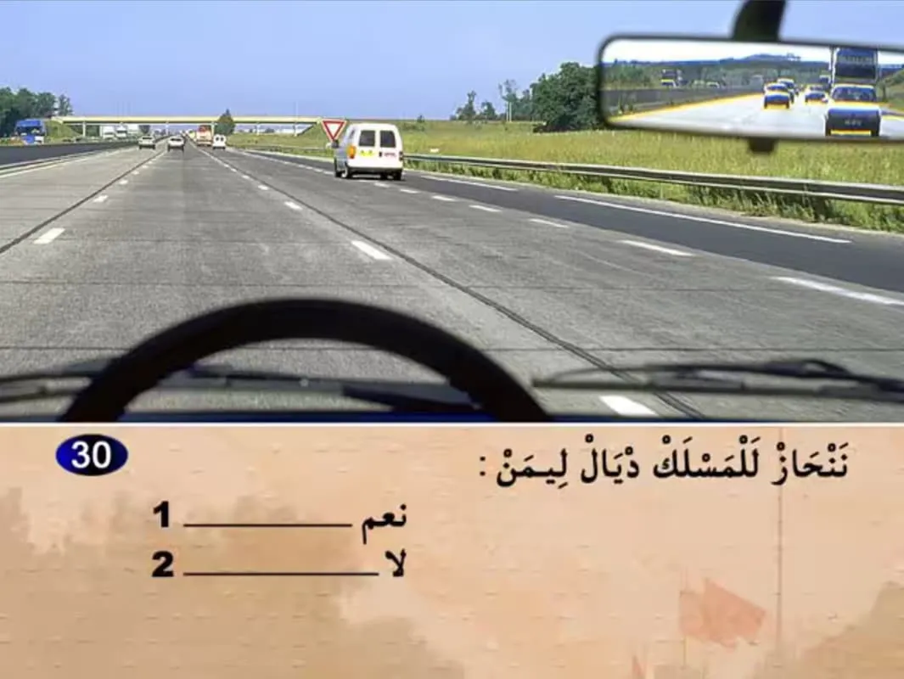
الجواب الصحيح: 2
لا توجد إشارة طرقية تجبرني على الإنحياز للمسلك المتواجد على اليمين، كما أنني أقوم بتجاوز السيارة البيضاء المتواجدة على اليمين، ومن يريد أن يتجاوزني فيمكنه ذلك من المسلك المتواجد على اليسار لأننا نتواجد في طريق سيّار. إذن لا أنحاز للمسلك المتواجد على اليمين.
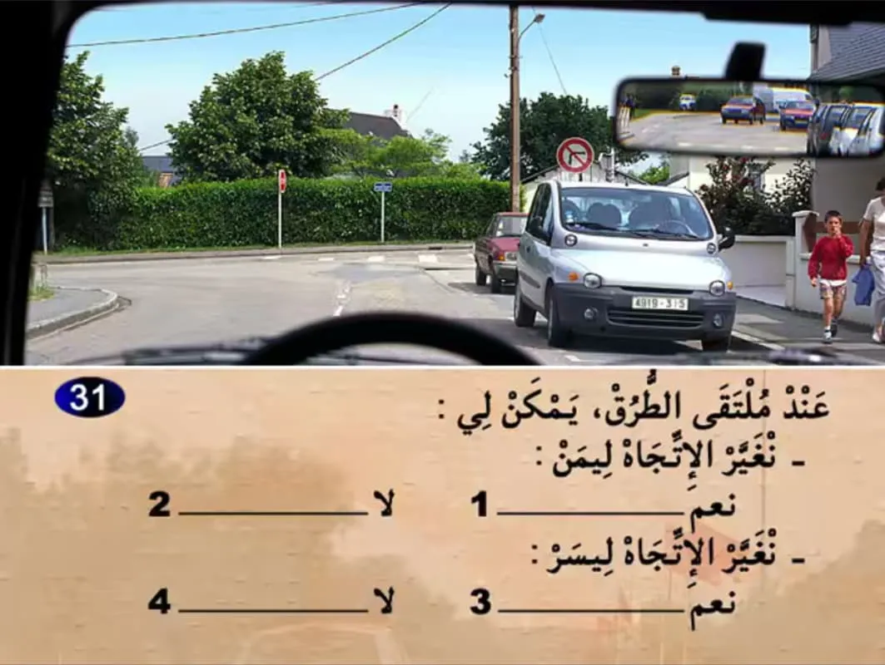
الجواب الصحيح: 2 و 3
عند ملتقى الطّرق القادم لا يمكنني الإنعطاف لليمين لأنه توجد إشارة طرقية عمودية تمنعني من الإنعطاف إلى اليمين، وبالنسبة للإنعطاف إلى اليسار فيمكنني ذلك لأنه لا توجد إشارة مرورية تمنعني من ذلك.
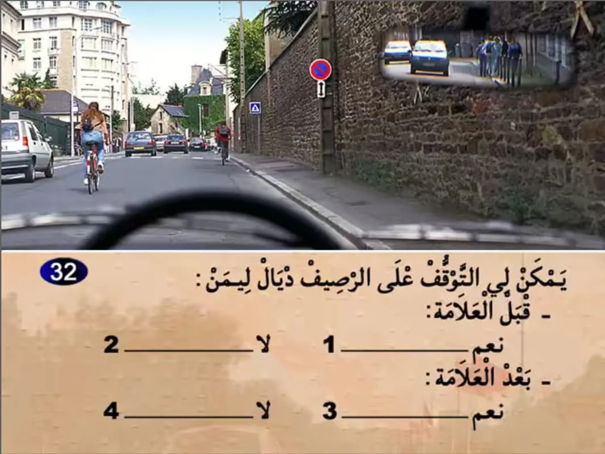
الجواب الصحيح: 2 و 4
بالنسبة للإشارة الطرقية فتمنعني من التّوقف على الرصيف الأيمين قبل العلامة وكذلك بعد العلامة.
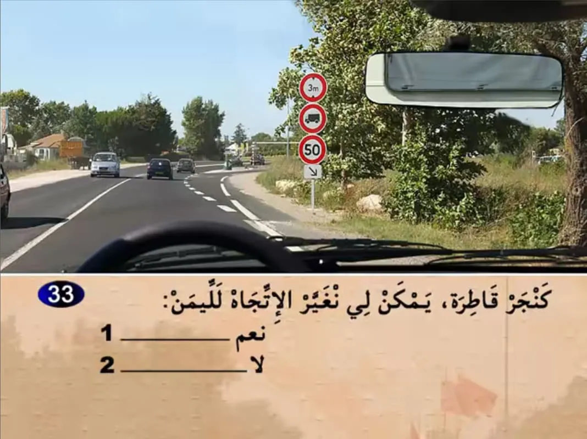
الجواب الصحيح: 1
العلامات الطرقية تشير إلى أنه ممنوع على الشاحنات المرور وكذلك العربات التي علوّها 3 أمتار، لكن لا توجد علامة طرقية تشير إلى أن السيارات التي لديها قاطرة ممنوع عليها المرور. إذن يمكنني تغيير الإتّجاه لليمين.
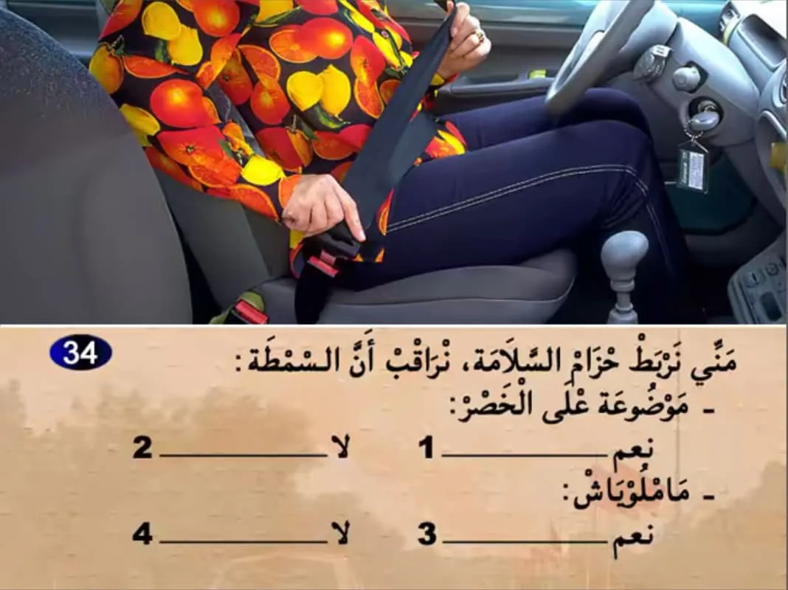
الجواب الصحيح: 1 و 3
عند ربط حزام السّلامة فيجب أن أراقب أن حزام السّلامة موضوع على الخصر وأيظا أن حزام السّلامة غير ملتوي.
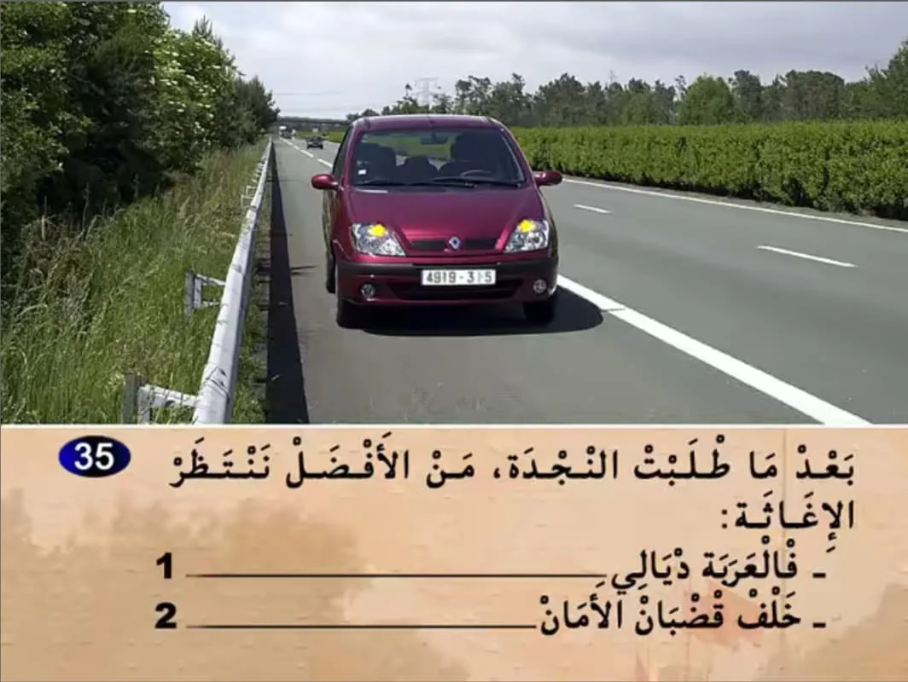
الجواب الصحيح: 2
بعد طلب النجدة فمن الأفضل أن أقوم بإنتظار الإغاثة خلف قضبان الأمان.
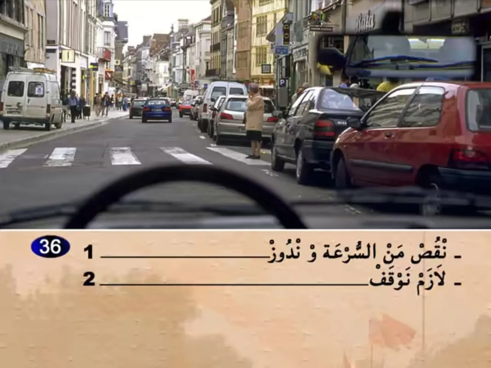
الجواب الصحيح: 2
عندما يندمج الراجلين في ممر الراجلين فمن الواجب علينا الوقوف وإعطائهم حق الأسبقية للمرور.
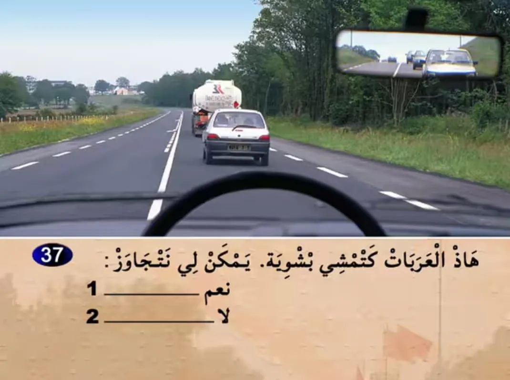
الجواب الصحيح: 2
التشوير الأفقي الخط المتّصل يمنعني من عملية التّجاوز.
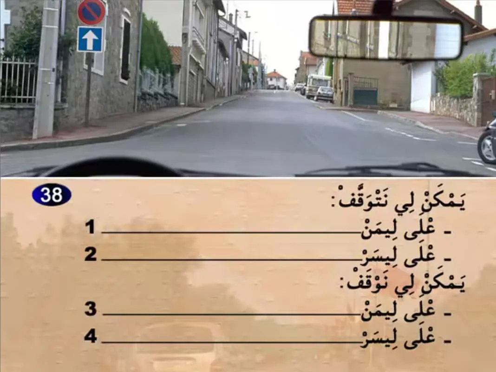
الجواب الصحيح: 1 و 3 و 4
الطريق ذات إتّجاه واحد، والعلامة الطّرقية الخاصة بالمنع فهي تشير إلى المنع من التوقّف على الجهة اليسرى فقط، لأن الطريق ذات إتجاه واحد فيمكننا من التوقف في الجهة اليمنى، بالنسبة للوقوف فهو مسموح به على الجهة اليسرى واليمنى لأن العلامة الطرقية تمنع التوقّف على الجهة اليسرى وليس الوقوف على الجهتين.
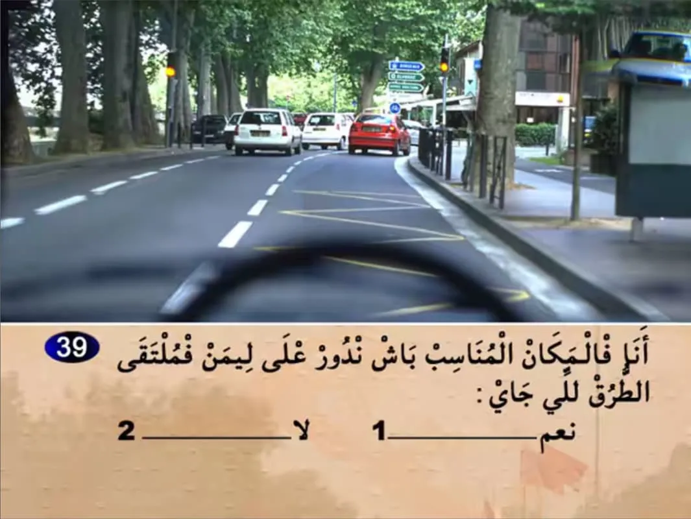
الجواب الصحيح: 1
بالنسبة لهذا المكان فهو خاص بالحافلات، وممنوع الوقوف أو التوقّف فيه لانه مكان خاص، لكن في حالة أنّي أردت إستعماله للإنعطاف لليمين فلا مشكلة في ذلك، المنع يكون للوقوف أو التوقّف فيه، بالنسبة لإستعماله للمرور فليس ممنوع.
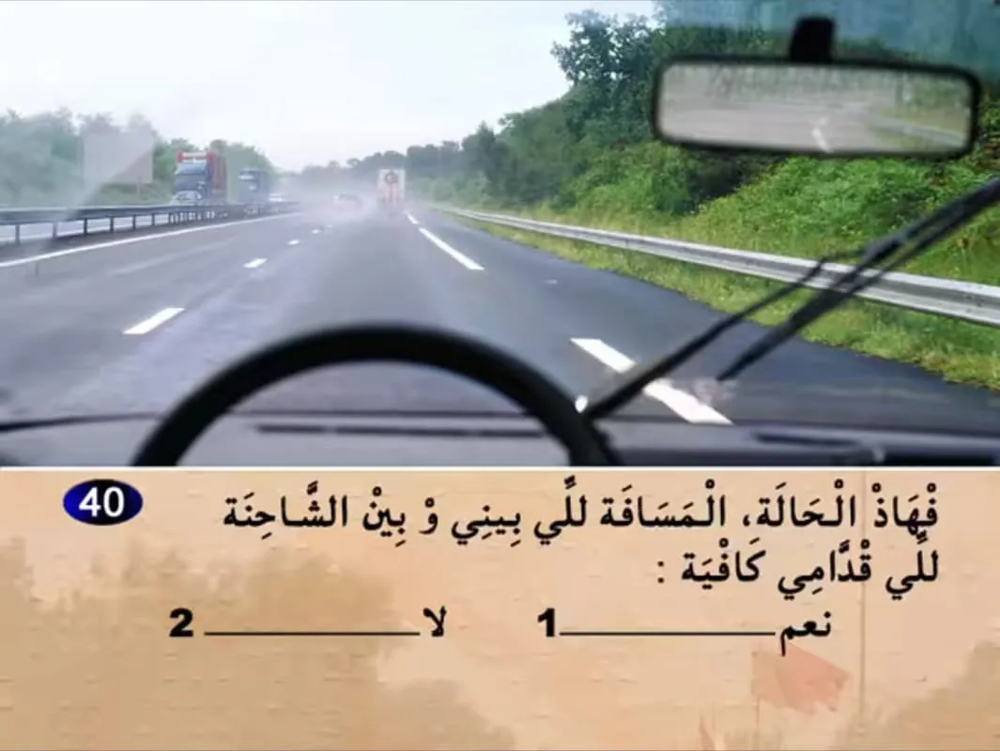
الجواب الصحيح: 1
دائما في حالة المطر فمسافة الأمان تكون أطول، في هذه الحالة فالمسافة التي بيني وبين الشاحنة كافية، لأن لوحة الترقيم التي تتوفر عليها الشاحنة لا يمكنني قراءتها وهذا يعني أني بعيد جدا عن الشاحنة وهذا يدل على أن المسافة التي بني وبين الشاحنة كافية.